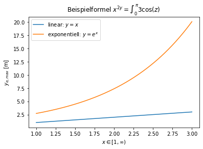
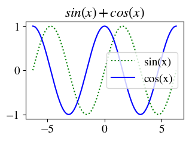
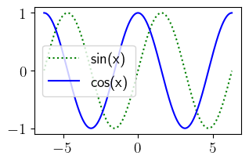

3. LaTeX in Matplotlib¶
3.1. LaTeX Formeln in Beschriftungen verwenden¶
Durch das Einschließen mit $ und das vorstellen des Buchstaben r (interpretation als raw Text) können Formeln mit \(\LaTeX\) ausgedrückt werden
import matplotlib.pyplot as plt
import numpy as np
x = np.linspace(1, 3, 300)
y_lin = x
y_exp = np.exp(x)
plt.plot(x,y_lin,label=r"linear: $y=x$");
plt.plot(x,y_exp,label=r"exponentiell: $y=e^x$");
plt.title(r"Beispielformel $x^{2y} = \int_0^\pi{3\cos (z)}$ ")
plt.xlabel(r"$x \in [1, \infty)$")
plt.ylabel(r"$y_{\alpha,max}$ [m]")
plt.legend();

3.2. Bildbreite nach LaTeXvorgabe Einstellen¶
Beziehend auf den Artikel im SciPy Cookbock wird hier aufgezeigt, wie man Grafiken so formatiert dass Sie im Stil von LaTeX entsprechen (Schriftart) und die richtige Bildbreite wählen
Um die Bildbreite zu wählen muss in dem LaTeX figure der Befehl \showthe\columnwidth eingebaut werden, wodruch im LaTeX Output die Breite in pt abgelesen werden kann
fig_width_pt = 246.0 # Get this from LaTeX using \showthe\columnwidth
#calculate image size ( from https://scipy-cookbook.readthedocs.io/items/Matplotlib_LaTeX_Examples.html )
inches_per_pt = 1.0/72.27 # Convert pt to inch
golden_mean = (math.sqrt(5)-1.0)/2.0 # Aesthetic ratio
fig_width = fig_width_pt*inches_per_pt # width in inches
fig_height = fig_width*golden_mean # height in inches
fig_size = [fig_width,fig_height]
plt.rcParams['font.size'] = fontsize;
3.3. LaTeX Schrift verwenden¶
mit der Schriftart stix¶
plt.rcParams['mathtext.fontset'] = 'stix'
plt.rcParams['font.family'] = 'STIXGeneral'
import matplotlib.pyplot as plt
import numpy as np
import math
fontsize = 14
fig_width_pt = 246.0 # Get this from LaTeX using \showthe\columnwidth
#calculate image size ( from https://scipy-cookbook.readthedocs.io/items/Matplotlib_LaTeX_Examples.html )
inches_per_pt = 1.0/72.27 # Convert pt to inch
golden_mean = (math.sqrt(5)-1.0)/2.0 # Aesthetic ratio
fig_width = fig_width_pt*inches_per_pt # width in inches
fig_height = fig_width*golden_mean # height in inches
fig_size = [fig_width,fig_height]
#reset style
plt.style.use('default')
# set font/fig size + LaTeX font
plt.rcParams['font.size'] = fontsize;
plt.rcParams['figure.figsize'] = fig_size
plt.rcParams['mathtext.fontset'] = 'stix'
plt.rcParams['font.family'] = 'STIXGeneral'
#plot
x = np.arange(-2*math.pi,2*math.pi,0.01)
y1 = np.sin(x)
y2 = np.cos(x)
plt.plot(x,y1,'g:',label='sin(x)')
plt.plot(x,y2,'-b',label='cos(x)')
plt.title("$sin(x)+cos(x)$")
plt.legend();

mit richtigem LaTeX rendering (dauert länger)¶
plt.rcParams['text.usetex'] = True
import matplotlib.pyplot as plt
import numpy as np
import math
fontsize = 14
fig_width_pt = 246.0 # Get this from LaTeX using \showthe\columnwidth
#calculate image size ( from https://scipy-cookbook.readthedocs.io/items/Matplotlib_LaTeX_Examples.html )
inches_per_pt = 1.0/72.27 # Convert pt to inch
golden_mean = (math.sqrt(5)-1.0)/2.0 # Aesthetic ratio
fig_width = fig_width_pt*inches_per_pt # width in inches
fig_height = fig_width*golden_mean # height in inches
fig_size = [fig_width,fig_height]
#reset style
plt.style.use('default')
# set font/fig size + LaTeX font
plt.rcParams['font.size'] = fontsize;
plt.rcParams['figure.figsize'] = fig_size
#plt.rcParams['mathtext.fontset'] = 'stix'
#plt.rcParams['font.family'] = 'STIXGeneral'
plt.rcParams['text.usetex'] = True
#plot
x = np.arange(-2*math.pi,2*math.pi,0.01)
y1 = np.sin(x)
y2 = np.cos(x)
plt.plot(x,y1,'g:',label='sin(x)')
plt.plot(x,y2,'-b',label='cos(x)')
plt.legend();
